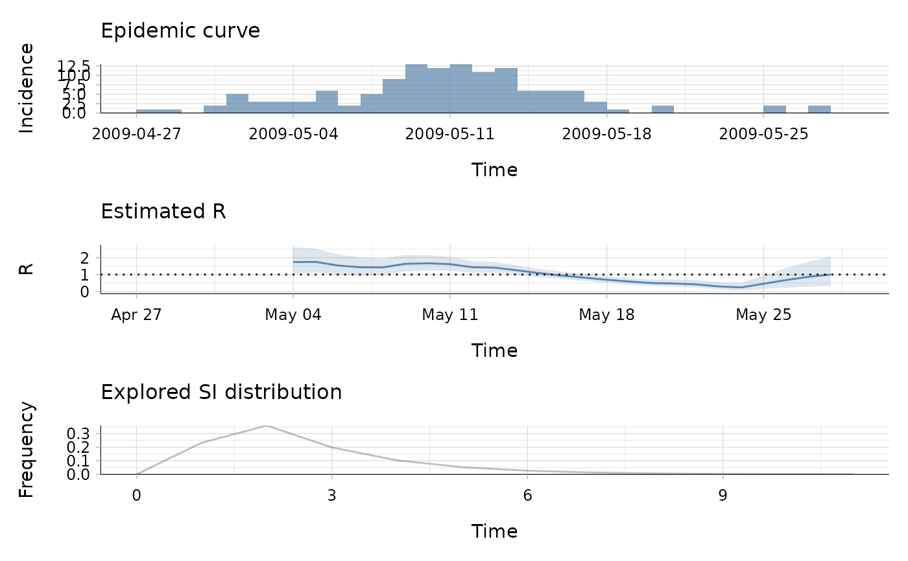
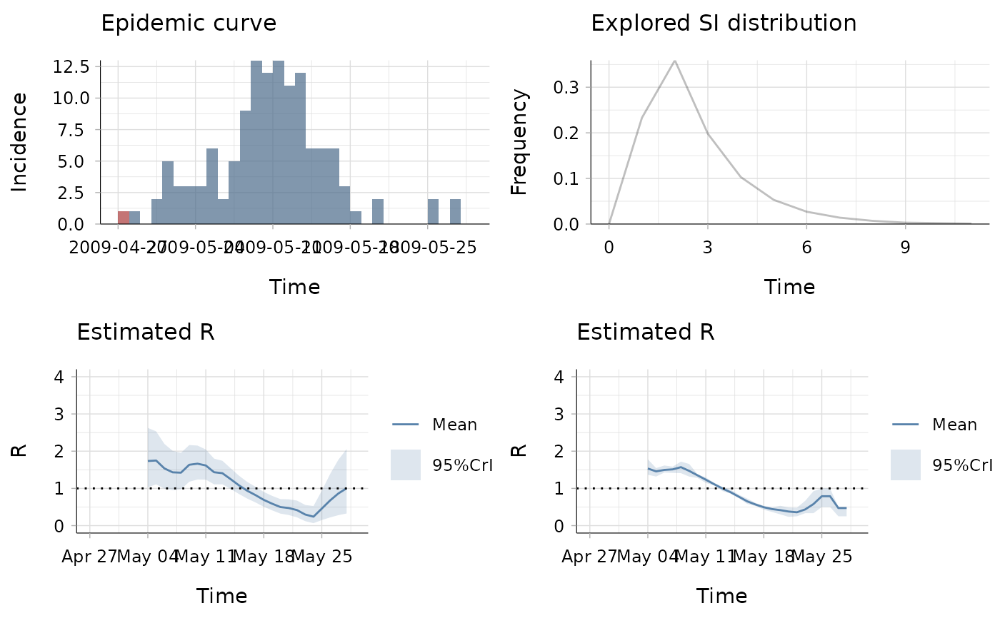

The plot method of estimate_r objects can be used to visualise three
types of information. The first one shows the epidemic curve. The second one
shows the posterior mean and 95% credible interval of the reproduction
number. The estimate for a time window is plotted at the end of the time
window. The third plot shows the discrete distribution(s) of the serial
interval.
# S3 method for estimate_R plot( x, what = c("all", "incid", "R", "SI"), add_imported_cases = FALSE, options_I = list(col = palette(), transp = 0.7, xlim = NULL, ylim = NULL, interval = 1L, xlab = "Time", ylab = "Incidence"), options_R = list(col = palette(), transp = 0.2, xlim = NULL, ylim = NULL, xlab = "Time", ylab = "R"), options_SI = list(prob_min = 0.001, col = "black", transp = 0.25, xlim = NULL, ylim = NULL, xlab = "Time", ylab = "Frequency"), legend = TRUE, ... )
| x | The output of function |
|---|---|
| what | A string specifying what to plot, namely the incidence time
series ( |
| add_imported_cases | A boolean to specify whether, on the incidence time series plot, to add the incidence of imported cases. |
| options_I | For what = "incid" or "all". A list of graphical options:
|
| options_R | For what = "R" or "all". A list of graphical options:
|
| options_SI | For what = "SI" or "all". A list of graphical options:
|
| legend | A boolean (TRUE by default) governing the presence / absence of legends on the plots |
| ... | further arguments passed to other methods (currently unused). |
a plot (if what = "incid", "R", or "SI") or a
grob object (if what = "all").
Rolina van Gaalen rolina.van.gaalen@rivm.nl and Anne Cori a.cori@imperial.ac.uk; S3 method by Thibaut Jombart
## load data on pandemic flu in a school in 2009 data("Flu2009") ## estimate the instantaneous reproduction number ## (method "non_parametric_si") R_i <- estimate_R(Flu2009$incidence, method = "non_parametric_si", config = list(t_start = seq(2, 26), t_end = seq(8, 32), si_distr = Flu2009$si_distr ) ) ## visualise results plot(R_i, legend = FALSE)  ## estimate the instantaneous reproduction number ## (method "non_parametric_si") R_c <- wallinga_teunis(Flu2009$incidence, method = "non_parametric_si", config = list(t_start = seq(2, 26), t_end = seq(8, 32), si_distr = Flu2009$si_distr ) ) #> Warning: setting config$n_sim to 10 as config$n_sim was not specified. ## produce plot of the incidence ## (with, on top of total incidence, the incidence of imported cases), ## estimated instantaneous and case reproduction numbers ## and serial interval distribution used p_I <- plot(R_i, "incid", add_imported_cases=TRUE) # plots the incidence #> The number of colors (8) did not match the number of groups (2). #> Using `col_pal` instead. p_SI <- plot(R_i, "SI") # plots the serial interval distribution p_Ri <- plot(R_i, "R", options_R = list(ylim = c(0, 4))) # plots the estimated instantaneous reproduction number p_Rc <- plot(R_c, "R", options_R = list(ylim = c(0, 4))) # plots the estimated case reproduction number gridExtra::grid.arrange(p_I, p_SI, p_Ri, p_Rc, ncol = 2) 